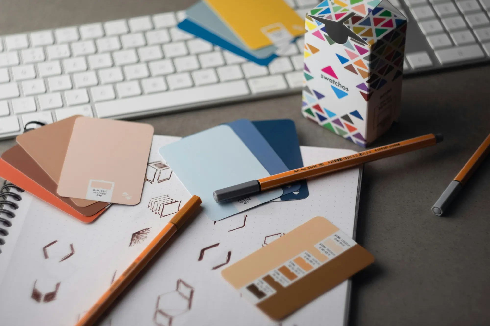

Retrato profesional
Para su perfil, su sitio y su prensa. Le guío en cada pose.
Q 650

Fotógrafa de retratos y producto · Zona 10
Soy Inés Valdizón. Fotografío personas, productos y negocios pequeños en mi estudio o en su local, sin poses forzadas.

Sobre mí
Empecé retratando a mis vecinos del barrio. Hoy fotografío a profesionales y negocios que quieren verse como son en su mejor día.
Trabajo sola, así que usted trata siempre conmigo: desde el primer mensaje hasta la entrega de sus fotografías.
Sesiones
Para su perfil, su sitio y su prensa. Le guío en cada pose.
Q 650

Todo su equipo con la misma luz y el mismo estilo.
Q 1,200

Sus productos listos para la tienda en línea y las redes.
Q 85
Galería
Toque una fotografía para verla completa.
Opiniones
★★★★★
«Odio las fotos y terminé disfrutando la sesión. Uso mi retrato en todo.»
★★★★★
«Rápida, puntual y muy clara con los precios. Las fotos del menú quedaron preciosas.»
★★★★★
«Nos retrató a los ocho en una mañana. Por fin el sitio se ve profesional.»
Contacto
Escríbame qué necesita fotografiar y le respondo hoy mismo con fechas y precio.
Lunes a viernes de 9:00 a 18:00 · Sábados con cita · Zona 10, Ciudad de Guatemala